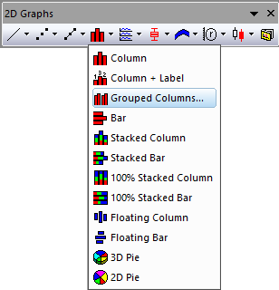
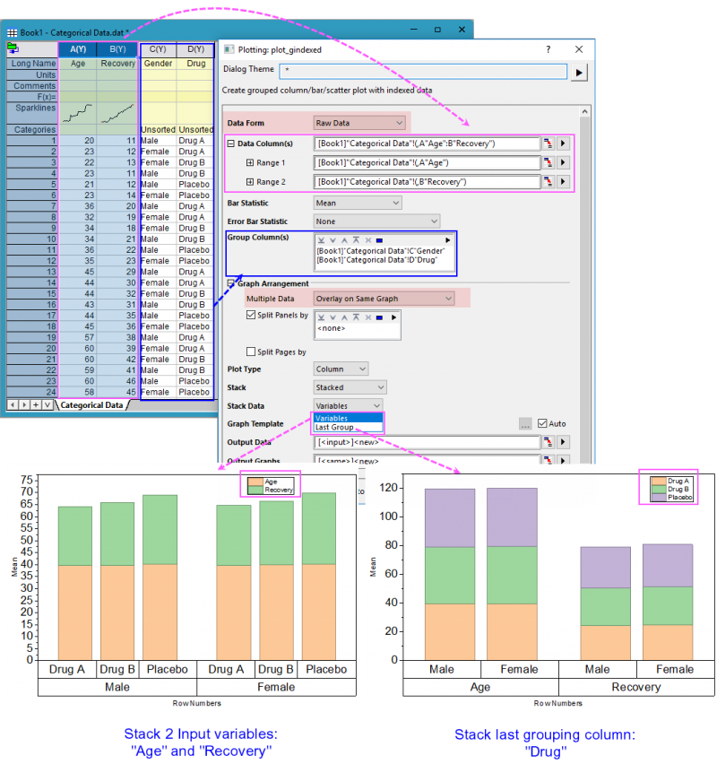

Gruppiertes Säulendiagramm
grouped-column-index-data

Datenanforderungen
Sie brauchen mindestens eine Y-Spalte als Eingabedaten. Optional können Sie eine zusätzliche Y-Fehlerspalte für jede Y-Spalte haben. Eine weitere Spalte enthält Gruppierungsinformationen.
Diagramm erstellen
Zum Öffnen des Dialogs plot_gindexed haben Sie drei Möglichkeiten:
- Wählen Sie Zeichnen > Kategorial: Gruppierte Säulen ... im Menü.
- Klicken Sie auf die Schaltfläche
 auf der Symbolleiste 2D-Grafiken.
auf der Symbolleiste 2D-Grafiken.
Wählen Sie in dem aufgerufenen Dialog den Eingabebereich aus. Fügen Sie mindestens eine Gruppenspalte hinzu und bestimmen Sie, wo die berechneten Daten angezeigt werden. Sie können dann ein gruppiertes Säulendiagramm erzeugen.
Einzelheiten zu den Bedienelementen erhalten Sie im Abschnitt unten:
Dialog plot_gindexed

In diesem Beispiel werden alle Verkaufszahlen als Balken gegen die Gruppen (auf der X-Achse), die in Gruppenspalten ausgewählt sind, gezeichnet.

In diesem Beispiel werden alle Mittelwerte der Daten für Heöh und Gewicht als Balken gegen die Gruppen (auf der X-Achse), die in Gruppenspalten ausgewählt sind, gezeichnet.
Für zusammengefasste Daten
Standardmäßig wurde die Datenform auf Zusammengefasste Daten gesetzt. Dies bedeutet, dass die Eingabedaten Indexdaten sind.
| Datenspalte(n) |
Dieser Zweig wird zum Festlegen der Eingabedaten verwendet. |
| Gruppenspalte(n) |
Wählen Sie die Gruppierungsspalte(n). |
| Beschriftung |
Aktivieren Sie dieses Kontrollkästchen, um eine Spalte oder mehrere Spalten als Beschriftungsspalte(n) auszuwählen. Bei Diagrammen mit mehreren Eingabedatenspalten: Wenn nur eine Beschriftungsspalte ausgewählt wurde, teilen all diese Zeichnungen die gleiche Beschriftungsspalte; wenn die gleiche Anzahl der Beschriftungsspalten ausgewählt wurde, hat jede Zeichnung ihre Beschriftungsspalte in Reihenfolge der Auswahl.
|
| Diagrammanordnung |
- Mehrere Daten: Wählen Sie, wie mehrere Eingabedaten angeordnet werden sollen.
- Überlagerung auf gleicher Grafik: Zeichnen Sie die ausgewählten Eingabedaten als sich überschneidende Zeichnungen im gleichen Diagrammlayer.
- Separate Layer auf gleicher Grafik: Zeichnen Sie die ausgewählten Eingabedaten in separate Layer auf der gleichen Grafik.
- Separate Grafiken: Zeichnen Sie die ausgewählten Eingabedaten in separate Diagrammfenster.
- Datenskalierungsebene: Wenn es mehrere Datensätze mit Gruppen gibt, können Sie diese Option verwenden, um Datenvariableninfos innerhalb und außerhalb von Gruppen einzufügen.

- Horizontale Felder nach: Wenn dieses Kontrollkästchen aktiviert wurde, können Sie eine weitere Gruppierungsspalte auswählen, um horizontale Felder zu aktivieren. Dadurch wird ein gruppiertes Säulendiagramm für jeden Gruppierungswert separat gezeigt.
- Wenn Vertikale Felder nach nicht aktiviert ist, wird Felder umbrechen aktiviert und Hilfsstriche und Beschriftungen werden standardmäßig auf abwechselnden Seiten gezeigt.
- Wenn mehrere Spalten ausgewählt sind, wird oberhalb nur eine Beschriftungszeile für die Feldinfos gezeigt. Die Zeichenkette des Feldbanners umfasst alle Faktoren und ist durch Komma getrennt.
- Vertikale Felder nach: Wenn dieses Kontrollkästchen aktiviert wurde, können Sie eine weitere Gruppierungsspalte auswählen, um vertikale Felder zu aktivieren. Dadurch wird ein gruppiertes Säulendiagramm für jeden Gruppierungswert separat angezeigt.
- Wenn Horizontale Felder nach nicht aktiviert ist, wird Felder umbrechen aktiviert und Hilfsstriche und Beschriftungen werden standardmäßig auf abwechselnden Seiten gezeigt.
- Wenn mehrere Spalten ausgewählt sind, wird oberhalb nur eine Beschriftungszeile für die Feldinfos gezeigt. Die Zeichenkette des Feldbanners umfasst alle Faktoren und ist durch Komma getrennt.
- Seiten teilen nach: Wenn dieses Kontrollkästchen aktiviert ist, können Sie eine andere Gruppierungsspalte auswählen, um die Eingabedaten zu teilen und gruppierte Säulendiagramme auf verschiedenen Diagrammseiten zu erstellen. Jede Seite zeichnet nur die Spalten innerhalb der für die Seite relevanten Gruppe. Die seitenrelevanten Gruppeninformationen werden im Layertitel gezeigt, getrennt durch Komma, falls es mehrere Faktoren gibt. Das Berichtsdiagrammblatt führt alle Seiten auf.
|
| Diagrammtyp |
Legen Sie den Diagrammtyp fest - Säulendiagramm, Balkendiagramm oder Punktdiagramm. |
| Stapeln |
Legen Sie fest, ob die Säulen/Balken gestapelt werden sollen, wenn sich mehrere Eingabevariablen in der gleichen Grafik überlagern. Sie können Nebeneinander, Gestapelt oder Gestapelt, 100% wählen. Diese Option ist für den Diagrammtyp Punktdiagramm nicht verfügbar. |
| Diagrammmvorlage |
Legen Sie ggf. eine Anwendervorlage fest. Per Standard ist das Kontrollkästchen Auto aktiviert und die Standardvorlage GBOX wird verwendet. |
| Ausgabe in |
Legen Sie fest, wo die Diagramme ausgegeben werden sollen, als separate Diagrammfenster oder eingebettet in ein Berichtsblatt. |
| Daten ausgeben |
Legen Sie fest, wo die berechneten Daten ausgegeben werden. |
| Diagramme ausgeben |
Legen Sie fest, in welches Blatt die Ergebnisdiagramme ausgegeben werden. |
Zusätzlich können Sie sich das finale Diagramm in diesem Dialog anzeigen lassen.
| Hinweis: Um den Gruppierungsbereich nicht mit der alphabetischen Standardreihenfolge zu sortieren, setzen Sie ihn (sie) als kategorial und modifizieren Sie die Reihenfolgen auf der Registerkarte Kategorien. |
Für Rohdaten
Wenn Sie Rohdaten in der Auswahlliste Datenform wählen, werden zwei statistische Optionen gezeigt, mit denen Sie festlegen können, welche statistischen Informationen der ausgewählten Eingabedaten als Säulen oder Balken und ihre Fehlerbalken gezeigt werden. Eine andere Option Daten stapeln wird für die Diagrammtypen Säulen und Balken angezeigt und verwendet, um zu stapelnde Daten festzulegen.
- Statistik Balken: Sie können wählen, dass eine Art von statistischen Werten als Säulen oder Balken gezeigt wird. Die Optionen Mittelwert, N, N fehlend, Median, Min., Max., Summe, StdAbw., Geometrisches Mittel, Harmonisches Mittel und Varianz stehen in der Auswahlliste zur Verfügung.
- Statistik Fehlerbalken: Sie können wählen, dass eine Art von statistischen Werten als Fehlerbalken für die Säulen oder Balken gezeigt wird. Die Optionen Kein, StdAbw., Standardfehler des Mittelwerts, 95% KI des Mittelwerts, 10%-90%, 5%-95%, 1%-99%, Q1-Q3, Min-Max und Mittlere absolute Abweichung stehen in der Auswahlliste zur Verfügung.
- Daten stapeln: Legen Sie die zu stapelnden Daten fest. Wenn Variablen ausgewählt sind, werden die Spalten nach Eingabevariablen für jeden Teildatensatz auf Layerebene kumulativ gestapelt. Wenn Letzte Gruppe ausgewählt ist, werden die Spalten nach der letzten Gruppenspalte gestapelt. Hinweis: Das Stapeln der letzten Gruppe wird nur unterstützt, wenn die Anzahl der Gruppenspalten größer als 1 ist.

Die anderen Optionen sind die gleichen wie bei den Zusammengefassten Daten.
Beispiele
 |
- Öffnen Sie eine neue Arbeitsmappe und klicken Sie auf die Schaltfläche
 , um die Datei Categorical Data.dat aus dem <Origin-Verzeichnis>\Samples\Graphing zu importieren. , um die Datei Categorical Data.dat aus dem <Origin-Verzeichnis>\Samples\Graphing zu importieren.
- Markieren Sie Spalte B und wählen Sie Zeichnen > Kategorial: Gruppiertes Säulendiagramm ... im Hauptmenü, um den Dialog plot_gindexed zu öffnen.
- Klicken Sie im Abschnitt Gruppenspalte(n) auf die Schaltfläche Hinzufügen
 oben rechts und fügen Sie die Spalte D als den ersten Gruppierungsbereich hinzu. Fügen Sie entsprechend Spalte C als den zweiten Gruppierungsbereich hinzu. oben rechts und fügen Sie die Spalte D als den ersten Gruppierungsbereich hinzu. Fügen Sie entsprechend Spalte C als den zweiten Gruppierungsbereich hinzu.
- Klicken Sie auf OK, um die Zeichnungsdaten und Diagramme in die neu erzeugten Blätter auszugeben.

|
Vorlage
gColumn.otpu (installiert im EXE-Ordner von Origin)
Hinweise
- Wenn es mehr als einen Gruppierungsbereich (in dem Feld Gruppenspalte(n)) gibt, werden die Hilfsstrichsbeschriftungen der X-Achse standardmäßig als Tabellen angezeigt. Sie können dieses Verhalten und die Formatierung der Tabelle der Hilfsstrichsbeschriftung im Allgemeinen über die Registerkarte Tabelle auf der Registerkarte Beschriftung der Hilfsstriche des Dialogs Achsen steuern.
- Standardmäßig verwendet dieses Diagramm Index zum Anwenden von Füllfarbe. Es gibt jedoch auch andere Optionen. Die folgende Abbildung zeigt drei Variationen des gleichen Diagramms. Der Unterschied besteht in der Art und Weise, wie Farbe auf die Balken angewendet wird:
- Im Diagramm links wird die Balkenfarbe auf die Teilgruppe (Gender) indiziert. Dies ist Standard und sollte für die meisten Situationen, einschließlich unbalancierter Zeichnungen, verwendet werden können.
- Im mittleren Diagramm wird Balkenfarbe auf die Hauptgruppe (Drug) indiziert.
- Im Diagramm rechts ist die Balkenfarbe auf Inkrement gesetzt, mit einer Teilgruppengröße von 8.

- Weitere Informationen finden Sie unter:
- Sie können die Abstände zwischen den Säulen bzw. Säulengruppen mit Hilfe der Bedienelemente auf der Registerkarte Abstände des Dialogs Details Zeichnung modifizieren.
- Wenn Sie ein gruppiertes Balkendiagramm erstellen möchten, können Sie den Diagrammtyp im Dialog plot_gindexed auf Balken setzen. Alternativ können Sie ein gruppiertes Säulendiagramm mit Hilfe des Menübefehls erstellen und dann Grafik: X-Y-Achse austauschen wählen.
- Wenn Sie ein gruppiertes Punktdiagramm erstellen möchten, können Sie den Diagrammtyp im Dialog plot_gindexed auf Punkt setzen. Die Quelldaten werden entsprechend Ihrer Gruppierungsspalte in Untergruppen aufgeteilt.
Versionsinformationen
| Mindestversion: Origin 9,1 |
Letzte Aktualisierung: Origin 2026 |